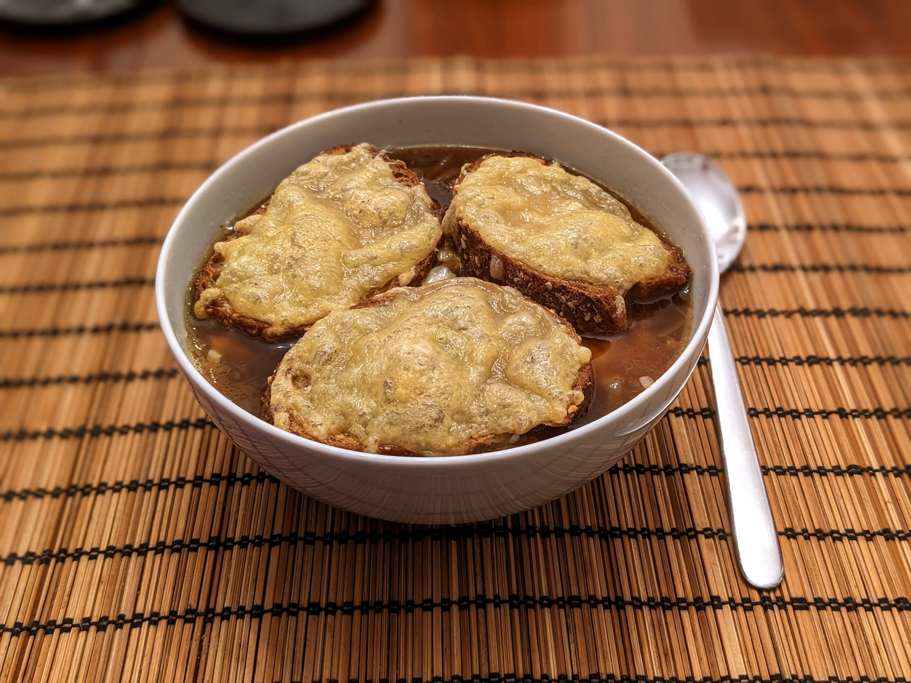

Soupe à l'oignon

Pour 3 personnes (si c'est le plat principal, 6 si c'est juste une entrée) :
- Deux bons kilos d'oignons
- Deux bons litres de bouillon (de légumes, par exemple)
- Une ou deux feuilles de thym
- Une ou deux branches de laurier
- (Facultatif) Un peu de porto
- Une demi-baguette de pain (ou un peu plus)
- 150g d'emmental (ou un peu plus)
- Éplucher et faire caraméliser les oignons dans de l'huile d'olive. Il faut bien que ça caramélise, c'est-à-dire que ça prenne une belle couleur brune. Vu la quantité d'oignons, il faut typiquement faire ça en quatre fois, ça aide d'avoir plusieurs poêles.
- Une fois qu'on a fini de faire cuire les oignons, mettre un peu du bouillon dans la poêle pour bien récupérer tous les jus.
- Mettre les oignons avec le reste du bouillon, le porto et les herbes dans une mijoteuse, et faire cuire à feu doux 6-8 heures. On peut aussi faire ça dans une casserole classique, à feu très doux, environ 4 heures.
- Vers la fin de la cuisson, râper l'emmental. Trancher le pain en tranches de 2cm. Faire toaster le pain au gril du four sur du papier sulfurisé, d'abord d'un côté, puis les retourner, les saupoudrer généreusement de fromage râpé, et les refaire toaster de l'autre côté.
- Mettre la soupe dans les bols, les saupoudrer d'emmental râpé, et mettre une ou deux tranches de pain grillé sur chaque. Si on peut, les passer sous le gril du four pendant une minute (mais si on est pas sûr que les bols survivent, éviter de faire ça).
Remarque : la taille exacte des morceaux d'oignons n'est pas super importante, et couper cette masse d'oignons représente pas mal de boulot. Ne pas hésiter à les couper à la mandoline ou même au robot de cuisine si on en a.